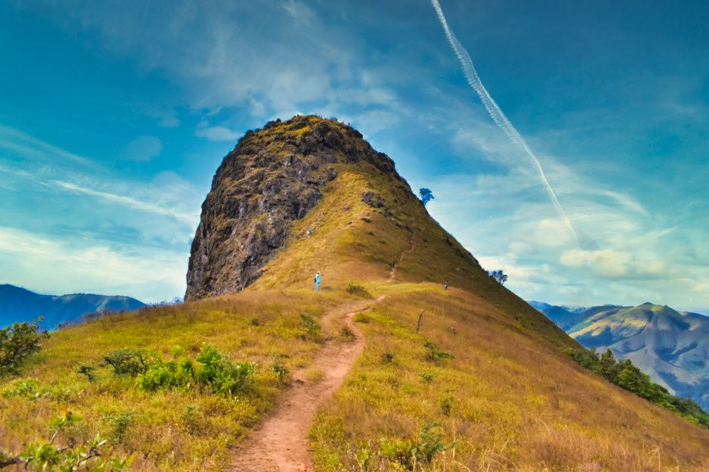

Charmadi Ghat is one of the many western ghats that are known for its outstanding scenery. It is a stretch of about 25 km from Kottigehara of Chikmagaluru to Charmadi of Dakshina Kannada district. To relish the beauty of the Ghat, you can trek to a series of mountains that come within the Charmadi belt.
Ettina Bhuja is one such mountain that is a part of the Charmadi range at an altitude of 1300 m (4,265 ft). It is situated in the Mudigere range of the Chikmagalur district.
Ettina Bhuja meaning Ox’s shoulder is one of the unexplored treks in Karnataka. Locals call this trek as Shishila Gudda trek.
Panoramic views of the Charmadi range and Shishila valley can be seen from the peak. It is surrounded by many more hills like Deepadakallu, Amedikallu, Ombattu Gudda and Jenukallu Gudda.
Trek Distance: 800 m
Trek Duration: 15 minutes
GPS coordinates of the temple: 12°59’13.0″N, 75°34’27.8″E
GPS coordinates of the forest entrance: 12°58’52.68″N, 75°34’18.27″E
Your trek starts from the Sri Nanya Bhairaveshwara temple. It was built in the 13th century. This temple was a part of the fort which Hoysalas built. It is believed that you can hear OM sound from the temple bell.
There is no place to freshen up here and no drinking water source. You have to fill your water bottles in Sattiganahalli before you start the trek.
Best time to do Ettina Bhuja trek is the post-monsoon season. Ettina Bhuja from Bhairaveshwara temple is accessible anytime after the monsoon (From September to February).
If you are trekking from Shishila village, you can do only after October as the current of Kapila river will be high.
During the monsoon season, the trail becomes slippery. As a result, the final section of the trail becomes very difficult to climb. In summer, it becomes too hot and you will not get to see the real beauty of the Charmadi range.
